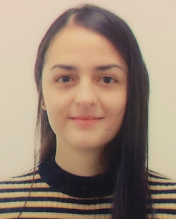
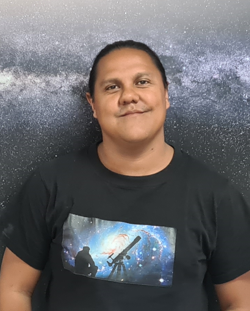

In construction
How, when, and where planet formation starts?
During my research career, I have focused on studying the physical processes occurring in protoplanetary disks from both theoretical and observational perspectives to understand how dust grains grow from micrometre to kilometre scales, ultimately forming the solid cores of planets like Earth. I am particularly interested in disks with vortices and/or ring structures, where dust grains can become trapped and grow. My research has primarily focused on analysing continuum dust emission at millimetre wavelengths while accounting for the effects of scattering by spherical dust grains. Through these analyses, I have been able to determine the dust surface density (mass), temperature, and grain sizes from multi-wavelength observations of dozens of protoplanetary disks. Once the dust properties are constrained, I employ analytical models and dust evolution simulations to explore the origins of the observed structures. I have placed special emphasis on analysing disks in the visibility plane, as this is essential to take full advantage of the observations obtained with radio interferometers such as ALMA and the VLA. Additionally, I am fascinated by the study of gas observations in protoplanetary disks, as they provide insights into disk dynamics and offer the opportunity to detect forming planets through their gravitational interactions with the surrounding material.
Expertises
- ALMA and VLA Data Reduction
- Dust and gas observations of protoplanetary disks
- Visibility Modelling
- Spectral Energy Distribution Modelling
- Radiative Transfer Modelling
- Multi-wavelength dust continuum observation analysis
- Dust opacity properties
- Effects of scattering on emergent intensity of isothermal slabs
Supervised Students
| Student | Project |
|---|---|
|  |
M.Sc. Maritza Caballero: Former M.Sc. student in Astrophysics at Instituto de Radioastronomía y Astrofísica. Thesis: "Propiedades del polvo en el disco protoplanetario alrededor del sistema HD 142527". Ms. Caballero analyzed the visibilities of the dust continuum emission of the disk around HD 142527, inferring their dust properties and interpreting the results with dust trapping models. Her thesis was defended in June 2023, and she is currently preparing a paper with the results (Caballero et al. in prep). |
|  |
B.Sc. Erick Rojas: M.Sc. student in Physics at Universidad de San Carlos de Guatemala. Thesis: "Dust porosity impact on the radiative transfer properties in protoplanetary disks". Mr. Rojas is working on the dust properties constraints from the millimetre dust continuum emission, taking into account more realistic grain opacities, such as porosity or non-sphere morphologies. Erick expects to defend his Master thesis in 2025. |